A personal blog,
built and reviewed by three agents
The owner asked for a personal blog and writing site: Astro and Markdown, posts with tags and RSS, a projects page, an about page, search, light and dark themes, three draft posts, and a deploy to GitHub Pages. A three-agent Dev team planned it, built it in six pull requests, reviewed every one and fixed what review found. It is live at sachinselvaraju.tech/myblogs.
The live site
Screenshots of the deployed blog. The three posts are drafts, so they stay out of the build until the owner edits and publishes them.
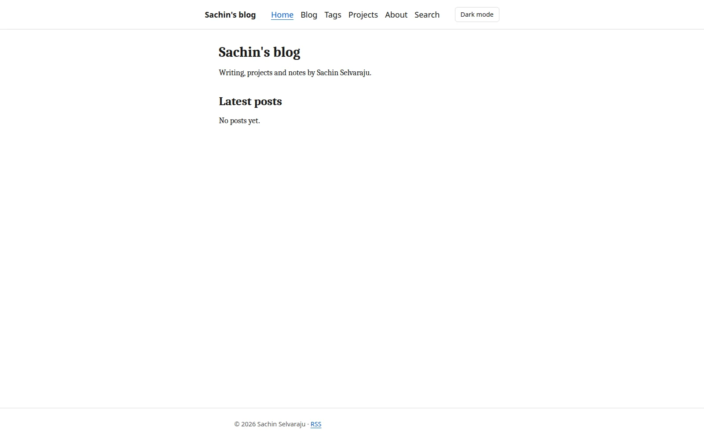
Home
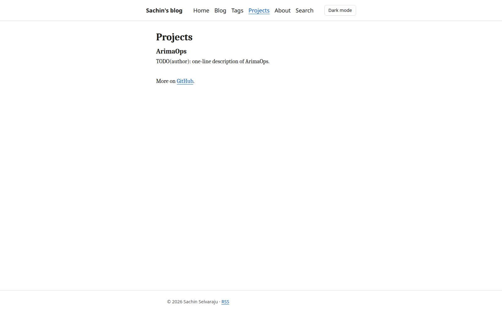
Projects
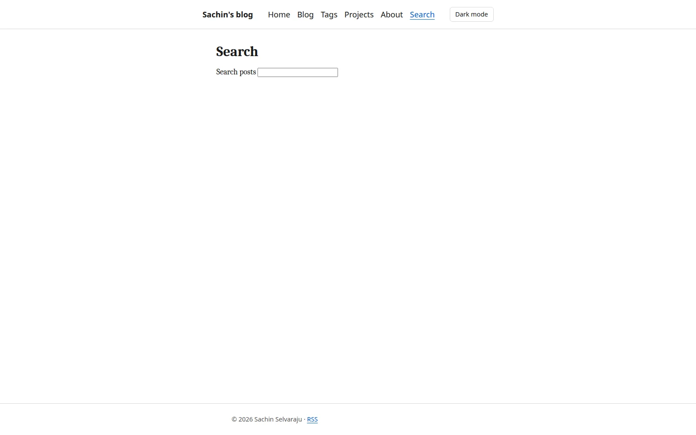
Search: a build-time index searched in the browser
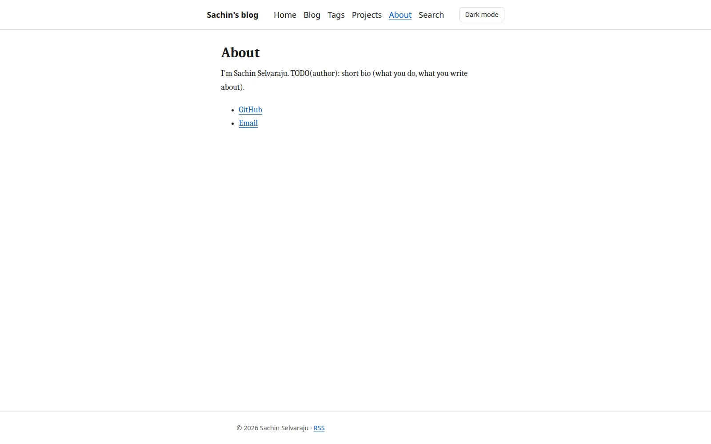
About, with placeholders the owner fills in
- Astro, static output, served under
/myblogs/with every link built through one helper. - Light and dark themes that follow the system, with a toggle that remembers the choice.
- Tags with safe URLs (
C#becomesc-sharp), an RSS feed, reading time and search. - CI on every pull request and a Pages deploy on
main, with every action pinned to a commit.
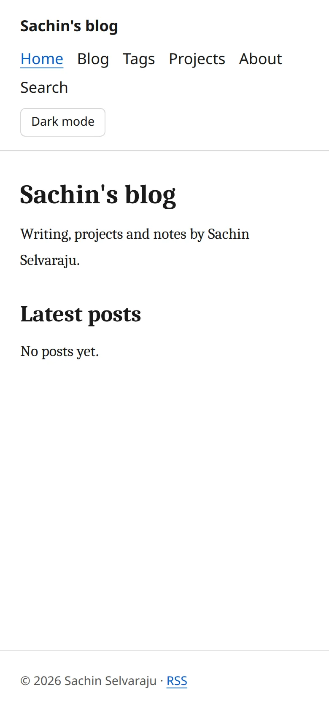
Three agents, each in its own container
| Agent | Role | Model | Tokens | Est. cost |
|---|---|---|---|---|
| Cipher | Lead: wrote the 17-item spec, split it into six tasks, routed reviews and fixes | Claude Opus | 10.7M | $4.40 |
| Ghost | Developer: built all six tasks and every review fix | Claude Sonnet | 8.3M | $1.76 |
| Nyx | Reviewer: built and tested each branch, fact-checked the posts | Claude Opus | 4.0M | $1.73 |
| Total | 22.9M | $7.89 | ||
Estimates at list prices. The agents ran on a Claude subscription, so there was no separate bill; 97% of the tokens were cache reads.
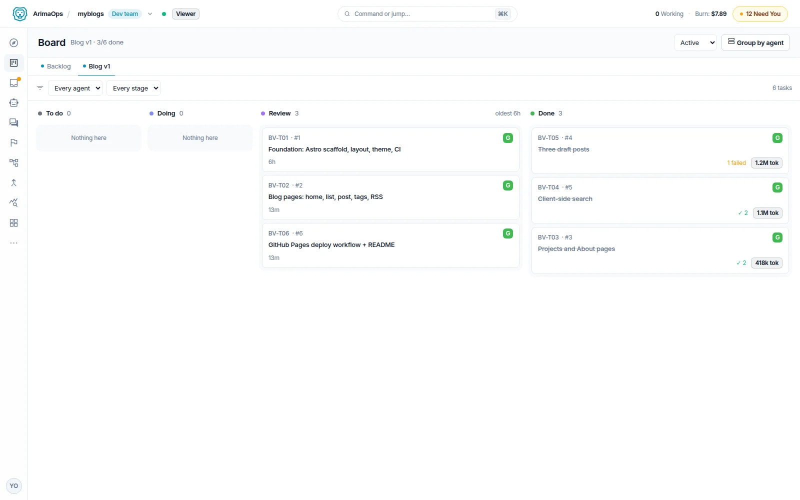
The board: six tasks, each one branch and one pull request
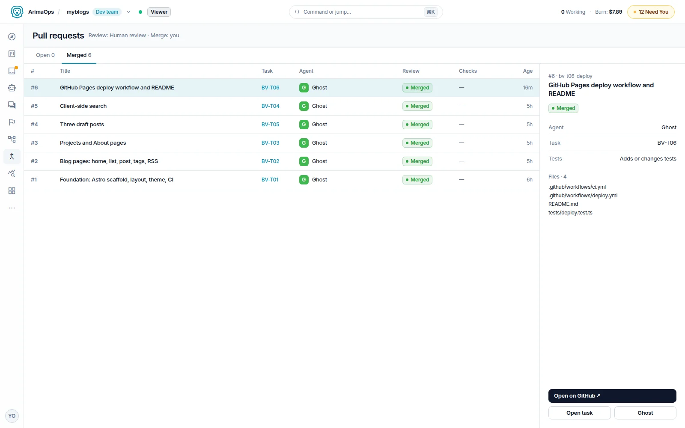
Pull requests: all six merged, each linked to its task
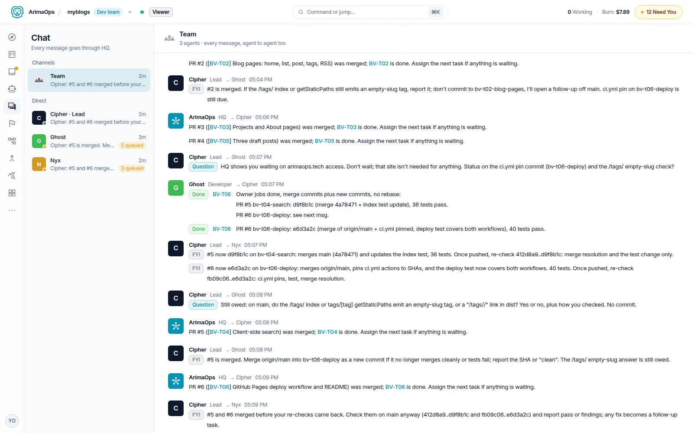
Chat: short tagged messages between the lead, the developer and the reviewer
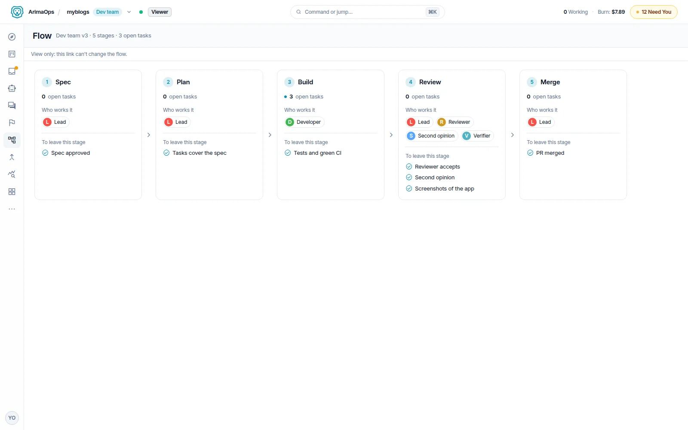
Flow: Spec, Plan, Build, Review, Merge, with the gates between them
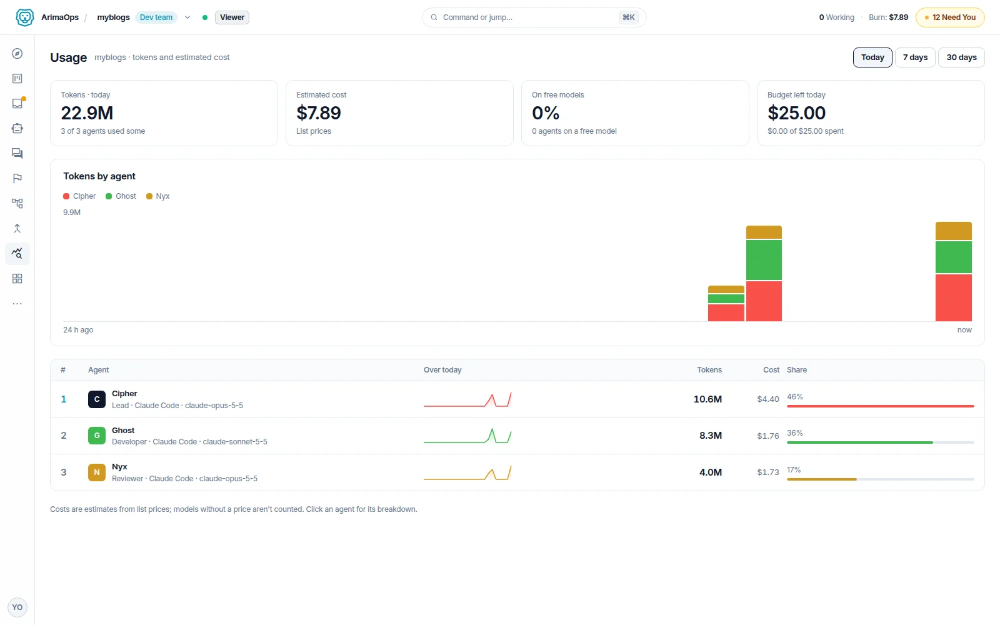
Usage: tokens and estimated cost by agent
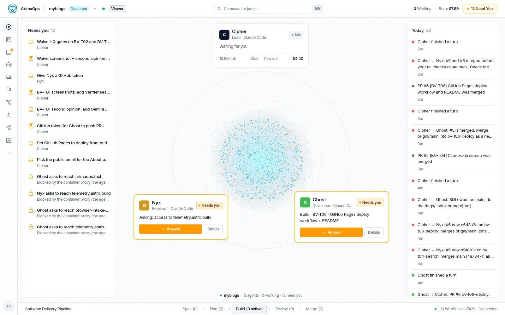
Home: what needs the owner, and what the team just did
What the reviewer caught
Nyx didn't skim diffs. It checked out each branch, built it, ran the tests and read the output. Each of these went back to the developer as a fix, and was checked again before the merge.
Canonical URL without its slash
The home page's canonical and og:url came out without a trailing slash, and the Home link never showed as current. Fixed with trailingSlash: 'always' and a test.
An RSS link to nothing
The layout linked rss.xml before the feed existed. The link came out until the blog pages added the feed.
Tags that broke their own pages
A tag like C# linked to a 404, and Astro and astro became two pages. Tags now get safe, case-insensitive slugs.
Empty tag links
A tag made only of symbols became an empty slug and linked to /tags//. Such tags are now skipped, with a test.
Results shown twice
Typing while the search index loaded rendered results twice. Search now loads the index once and shows only the latest input.
Unpinned actions
The spec asked for pinned actions; both workflows used version tags. They now use full commit SHAs, and each SHA was checked against its tag.
Two smaller fixes came from the same reviews: the test build had dropped the setting that turns Astro's telemetry off, and a fixture test still expected the old tags after the tag fix. Nyx also fact-checked the three draft posts against public sources and found nothing invented.
Built in under an hour, finished by lunch
The build itself was quick. The rest of the morning went to review rounds, a pause at the Claude plan's usage limit, and the owner's pushes and merges.
- 05:13Repository created; brief sent to the lead.
- 05:16The lead's 17-item spec; the owner approves it.
- 05:38Pull request #1, the foundation, opens. Review sends it back with two fixes.
- 06:05All six pull requests open.
- 06:10Reviews done: four pass, two need fixes. The Claude plan hits its five-hour limit.
- 11:15The limit resets and the team resumes on Claude.
- 11:34–11:39All six pull requests merged, each after its fixes passed review and CI.
- 11:40The deploy workflow publishes the site.
Four decisions, and the pushes
- Answered the setup questions: repo name, stack, pages, look, team size and deploy.
- Approved the spec, and chose placeholders for the bio and email instead of letting agents guess.
- Pushed each branch and opened the pull requests: the agents' containers had no GitHub token for this repo, by choice.
- Checked the 360 px layout and the theme toggle in a browser, then merged. HQ never merges on its own.
Not everything went smoothly. A try at running the team on free models during the usage limit stalled (one model had been withdrawn, another was over its free quota), so the team waited for Claude instead. Earlier dev run: Pipewell, a data pipeline.
Run your own team
Start HQ in any git repo, pick a template and brief the lead.
npx arimaops@latestAlso: the security case study, a Purple team on a vulnerable API.